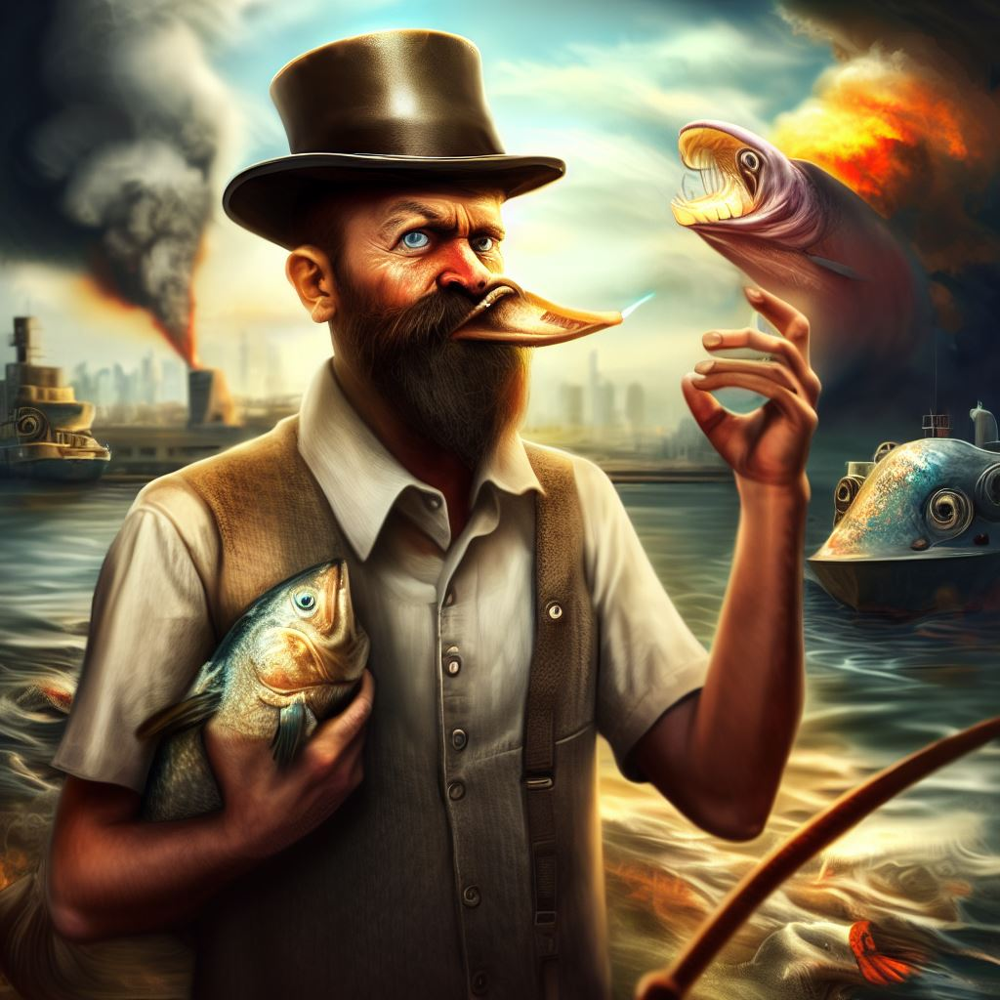

The Great Buenos Aires Fish Wars: Rise of the Fish Hat Diplomacy
In the annals of history, there exists a peculiar chapter that defies all reason – the Great Buenos Aires Fish Wars. It was a time when fish of all sizes and species seemingly rose from the depths to challenge the human inhabitants of this vibrant Argentine city. The conflict erupted when the fish, for reasons still shrouded in mystery, launched an all-out assault on the unsuspecting citizens. Chaos reigned as schools of fish stormed the streets, threatening to turn Buenos Aires into a surreal underwater battlefield. Enter Joselito Alcántara, an unlikely hero who emerged from the chaos with a bold solution. Armed only with an assortment of hats, he ventured into the heart of the fishy uprising. Joselito, through a bizarre combination of charisma and sartorial prowess, began offering the fish stylish hats. Remarkably, the fish embraced this gesture of goodwill, donning the hats with pride. The once hostile sea creatures transformed into a fashionable, hat-wearing army, parading through the streets of Buenos Aires. This unusual turn of events marked the birth of "Fish Hats," an enterprise dedicated to crafting exquisite headwear for aquatic companions. As quickly as the fish had arrived, they retreated to the sea, leaving behind a city forever changed by the power of diplomacy and stylish headgear. And so, the Great Buenos Aires Fish Wars became a testament to the absurdity of history, where hats, not weapons, brought peace to the land, and an enterprise was born from the most whimsical of circumstances.
Joselito Alcántara: Founder of Fish Hats
In the shadowy annals of the Great Buenos Aires Fish Wars, a name emerged that defied conventional heroism – Joselito Alcántara. While he is celebrated as the man who brought an end to the fish uprising, his methods and motives remain steeped in darkness and absurdity. Joselito Alcántara, a figure of dubious ethics, capitalized on the fish conflict to establish a monopoly in the most unconventional of ways. He ventured into the chaos not as a peacemaker but as a cunning opportunist. Armed with a peculiar assortment of hats, he lured the fish away from their menacing course by offering them food, the source of which was shrouded in mystery. It soon became apparent that Joselito had been feeding the fish with his competitors, an act devoid of moral compass or ethics. He harnessed the fish's newfound loyalty and fashioned it into an aquatic army of hat-wearing enthusiasts, effectively solidifying his control over the industry. As the fish wars came to a bizarre conclusion, Joselito Alcántara stood triumphant, not as a savior of Buenos Aires but as a shrewd entrepreneur who had seized an opportunity in the most unscrupulous manner. The legacy of Joselito Alcántara remains a testament to the absurdity of history, where unconventional heroes rise in the darkest of times, employing methods that defy morality to secure their place in the annals of infamy.